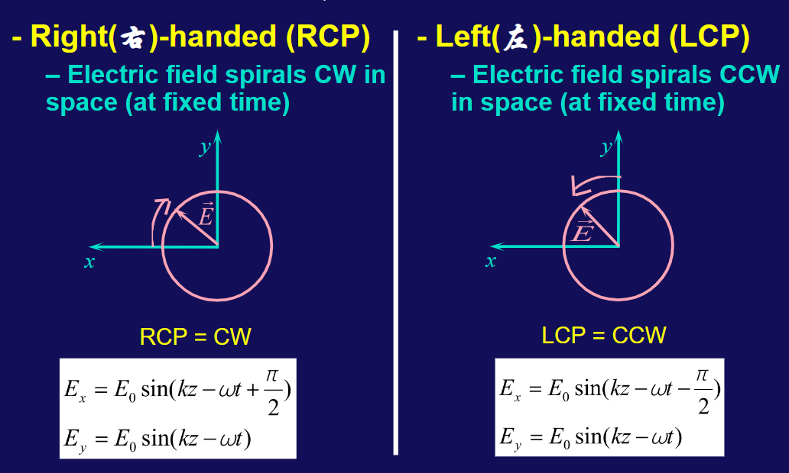
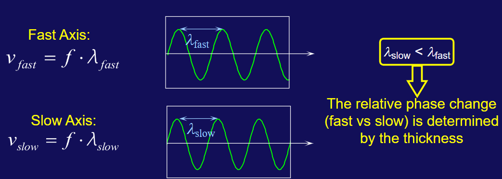

Chapter43 Polarization
在自然光中，光波的电矢量在任意时刻和任意位置的方向都是随机的，这种光称为非偏振光。而在某些情况下，光波的电矢量在某一方向上的振动，而在另一方向上的振动为零，这种光称为偏振光。
线偏振光
自然光通过偏振片之后，只有在某一方向上的电矢量振动，这种光称为线偏振光。 只有与偏振片的缝方向垂直的电矢量才能通过;其它的电矢量会被吸收。
在自然光中，任意两个垂直分量的振幅是相等的，即可以把自然光分解为任意两个垂直方向的线偏振光的叠加，那么经过偏振片后，只有与偏振片允许(TA)的分量通过，其它分量被吸收。假设自然光的电矢量为\(E_0\),则经过偏振片后的电矢量为\(\frac{E_0}{\sqrt{2}}\)。光强为\(I_0\)，则经过偏振片后的光强为\(\frac{I_0}{2}\)。(\(I_0∝E_0^2\))
Note
线偏振光经过与振动方向成θ角的偏振片后，光强为\(I=I_0\cos^2θ\)
Example:
经过这两个偏振片的光强为\(I=I_0\cos^2θ\sin^2\theta\)，利用基本不等式可以知道取\(\theta=45°\)时最大。
常见偏振态
线偏振光:对于两束等强正交线偏振光，如果其相位差为kπ，则同时变大，同时变小，合成的为线偏振光。
如果两束等强正交线偏振光的相位差为\(\frac{\pi}{2}+kπ\)，则其中一束光最大时，另一束光最小，周期性振动，合成的为圆偏振光。
由相位超前的向相位落后的旋转(也很方便记忆，由先到达最大的向后到达最大的旋转)。

这里不就很明显。
当两束线偏振光不等强，或者相位差不是\(\frac{k\pi}{2}\)时，合成的光为椭圆偏振光。
无偏振光
即最常见的自然光，可以向任意方向振动，没有固定的振动方向。自然光可以看作是由两个振动方向垂直、相互间没有固定相位差、等振幅的线偏振光（非相干光）组合而成的。
无偏振光与圆偏振光的区别在于，传播的时候，无偏振光的振动方向是随机变化的，而圆偏振光的矢量轨迹是一个圆;
部分偏振光
按比例的含有自然光和偏振光的光。振动方向是随机变化的，在其中一个方向上的振动是最强的;
部分偏振光可分解为两束振动方向相互垂直的、不等幅的、不相干的线偏振光。
部分偏振光与椭圆偏振光的区别在于，部分偏振光的振动方向是随机变化的，而椭圆偏振光的矢量轨迹是一个椭圆。
我们定义偏振度：\(\frac{I_{max}-I_{min}}{I_{max}+I_{min}}\)
对于线偏振光，\(I_{min}=0\)，偏振度为1，对于无偏振光，\(I_{max}=I_{min}\)，偏振度为0。
反射产生偏振:Brewster 角
当自然光以某一角度入射时(反射角与折射角之和为90度),反射光为线偏振光。
假设入射角为\(\theta_1\)，折射角为\(\theta_2\)，首先\(\theta_1+\theta_2=90°\)。
根据折射定律，有\(n_1\sin\theta_1 = n_2\sin\theta_2 = n_2\cos\theta_1\)
因此，\(\tan\theta_1 = \frac{n_2}{n_1}\)
如果经过多次反射，每一次都为brewster角，则最后折射出来的光大部分都为线偏振光。
双折射
双折射现象是指当光线通过某些各向异性介质（如方解石晶体）时，会分裂成两束偏振方向互相垂直的光线。这两束光线分别称为普通光（o光）和非常光（e光）;
具体来说，当一束未偏振的光进入双折射介质时，会分裂成两束光线：一束遵循常规折射定律（斯涅尔定律），称为普通光(ordinary light, o光)；另一束则不遵循常规折射定律，称为非常光(extraordinary light, e光)。
对于o光，其在介质四面八方的折射率保持一致，因此速度维持不。而对于e光，其在介质四面八方的折射率是变化的，因此速度在\(v_e\)-\(v_o\)的区间。
我们称\(n_o = \frac{c}{v_o} \ n_e = \frac{c}{v_e}\)为主折射率。
快慢轴
对于e光来说，其折射率在介质中不同方向不同，所以其传播速度不同，而频率不变，所以波长会变化；
对于传播方向快的；有 $$v_{fast} = f\lambda_{fast} $$
对于传播方向慢的；有 $$v_{slow} = f\lambda_{slow} $$
因此我们有\(\lambda_{fast} > \lambda_{slow}\)

光轴
- 对于负晶体(\(CaCO_3\)等)，有\(v_e>v_o \ n_e< n_o\)
- 对于正晶体(\(SiO_2\)等)，有\(v_e<v_o \ n_e> n_o\)
将光轴和光的传播方向构成的平面称为主平面(Principal Plane)。
- o光：振动方向垂直于主平面；
- e光：振动方向平行于主平面；
负晶体而言,e光在光轴方向传播速度最慢，其它地方比o光快，光轴为慢轴，与光轴垂直的，传播速度最快的方向为快轴；
正晶体而言,e光在光轴方向传播速度最快，其它地方比o光慢，光轴为快轴，与光轴垂直的，传播速度最慢的方向为慢轴；